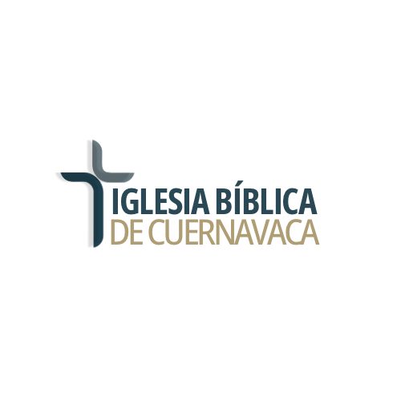
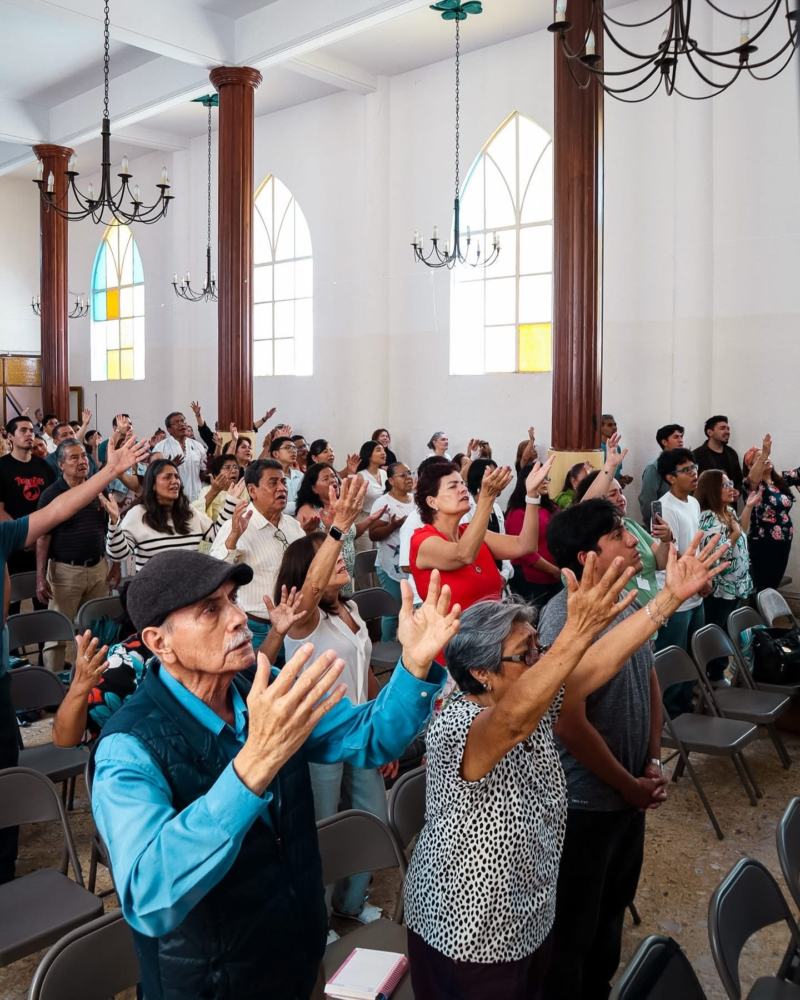

Varones IBC
Presencial en instalaciones de iglesia.

Iglesia Bíblica de Cuernavaca
Existimos para predicar fielmente el evangelio de Jesucristo, edificar a los creyentes mediante la enseñanza bíblica y vivir en obediencia a nuestro Señor.
Bienvenido
Es una gran bendición compartir contigo. Queremos ayudarte a conocer más acerca de nuestra iglesia, su visión y su vida congregacional.
9:15 AM y 12:15 PM
Calle Felipe Ángeles 12A, Lomas de la Selva, Cuernavaca.
Conecta y crece
Presencial en instalaciones de iglesia.
Presencial, último miércoles de cada mes.
Presencial en instalaciones de iglesia.
Online a través de Google Meet.
Presencial.
Presencial.
Presencial.

Nuestra fe
El fundamento de nuestra iglesia es el Señor Jesucristo y la autoridad máxima para juzgar toda doctrina son las Sagradas Escrituras.
Adoptamos una identidad confesional y buscamos honrar a Cristo y su Palabra como autoridad suprema en materia de fe y práctica.
Descargar declaración de fe →Vida congregacional
Espacio para información de clases, teens y próximos pasos.
Jóvenes Reflejo: comunidad, discipulado y servicio.
Estudios bíblicos para crecer en comunidad.
Formación académica para servir a la iglesia.
Ver ITC →Visítanos
Servicios dominicales 9:15 AM y 12:15 PM.
Información: +52 55 6371 5982